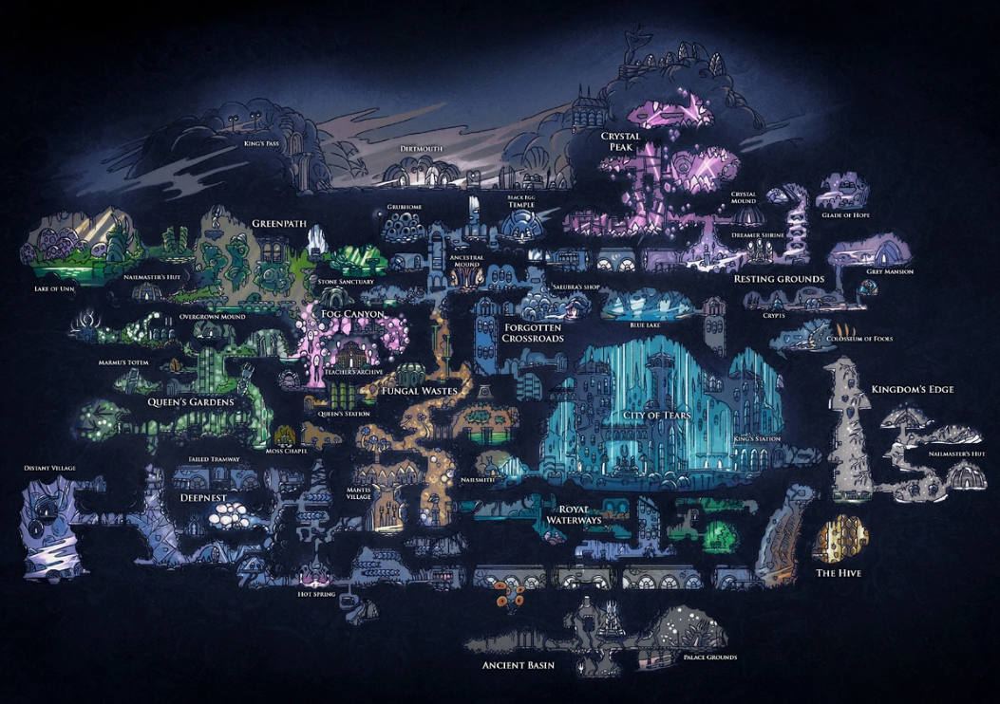
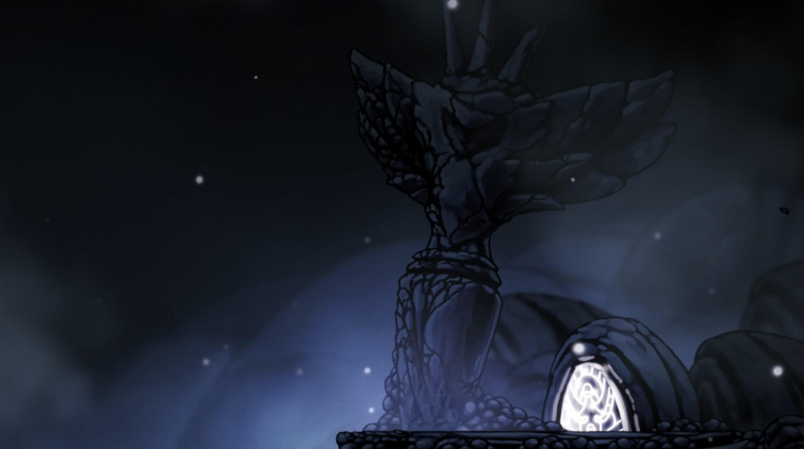

Primórdios, o Vazio e a Luz
No princípio, Hallownest era um reino próspero, onde os insetos viviam
suas vidas com um certo grau de felicidade, todas as construções eram
magníficas e de certa forma, voltadas ao bem estar da Radiância.Tudo
estava bem até que um Wyrm surgiu neste mundo, e então morrendo,
reencarnou na forma de um inseto autoritário, que logo se proclamou
rei de Hallownest, denominado de Rei Pálido. Com isso todos os insetos
que antes adoravam a Radiância, passaram a ignorá-la com o tempo, seus
monumentos foram esquecidos e sua luz estava se apagando.

Mapa de Hallownest
Tudo estava bem até que um Wyrm surgiu neste mundo e então morrendo,
reencarnou na forma de um inseto autoritário que logo se proclamou rei
de Halllownest, ou Rei Pálido. Com isso todos os insetos que antes
adoravam a Radiância, passaram a ignorá-la com o tempo e seus
monumentos foram esquecidos juntamente com sua luz, que estava se
apagando.

(monumento destinado a cultuar a Radiância, construído pela
civilização antiga localizado na Coroa de Hallownest)
Em um gesto de extremo ódio, ela passou a entrar nos sonhos de seus
antigos adoradores e perturbá-los, isso fazia com que eles lentamente
perdessem sua vontade própia e se tornassem extremamente agressivos. O
Rei Pálido, prezando pelo bem estar de seu povo, tomou as medidas
necessárias para ajudá-los, mas a Radiância estava muito frustrada
pelo ocorrido, então a única solução viável era selar a Radiância em
um local onde seu poder não pudesse mais influenciar os outros.
O Receptáculo Perfeito
Em um gesto de extremo ódio, ela passou a entrar nos sonhos de seus
antigos adoradores e perturbá-los, isso fazia com que eles lentamente
perdessem sua vontade própia e se tornassem extremamente agressivos. O
Rei Pálido, prezando pelo bem estar de seu povo, tomou as medidas
necessárias para ajudá-los, mas a Radiância estava muito frustrada
pelo ocorrido, então a única solução viável era selar a Radiância em
um local onde seu poder não pudesse mais influenciar os outros.